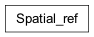

Spatial ref

- class gspy.gs_dataarray.Spatial_ref.Spatial_ref(xarray_obj)
Class to handle spatial reference formats
Allows instantiation by any of the following; wkid, EPSG, crs_wkt or proj4 strings. Handles non standard and custom spatial references that may not be defined by a single EPSG. Regardless of input option, the spatial ref contains a CF convention set of metadata.
Spatial_ref(**kwargs)
- Parameters:
wkid (str, optional) – wkid string
EPSG (int, optional) – Integer identifier for CRS
crs_wkt (str, optional) – Well known text
proj_string (str, optional) – Proj 4 string
- Returns:
Spatial reference
- Return type:
gspy.Spatial_ref
- classmethod from_dict(kwargs)
- static metadata_template(**kwargs)